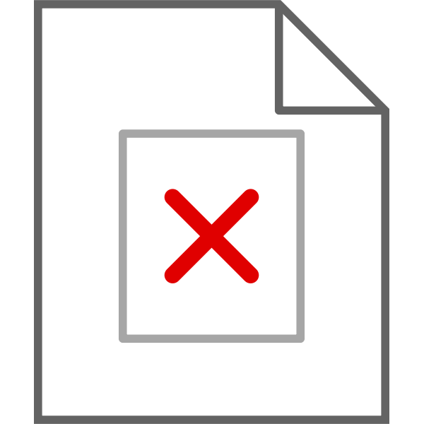

<nz-tabset [(nzSelectedIndex)]="selectedIndex">
  <nz-tab nzTitle="Loại chất thải">
    <dx-data-grid
      keyExpr="id"
      [dataSource]="wasteTypes"
      [showColumnLines]="true"
      [showRowLines]="true"
      [showBorders]="true"
      [allowColumnResizing]="true"
      [columnAutoWidth]="true"
      [rowAlternationEnabled]="true"
      (onSelectionChanged)="onSelectionChanged($event)"
    >
      <dxo-selection
        [selectAllMode]="'allPages'"
        [showCheckBoxesMode]="'always'"
        mode="multiple"
      ></dxo-selection>

      <dxo-paging [pageSize]="10"></dxo-paging>
      <dxo-header-filter [visible]="true"></dxo-header-filter>
      <dxo-filter-row [visible]="true"></dxo-filter-row>
      <dxo-export [enabled]="true"></dxo-export>

      <dxi-column dataField="qrCode" caption="Mã QR"></dxi-column>
      <dxi-column
        dataField="wasteTypeName"
        caption="Loại chất thải"
      ></dxi-column>
      <dxi-column
        dataField="wasteGroupName"
        caption="Nhóm chất thải"
      ></dxi-column>

      <dxo-paging [pageSize]="10"></dxo-paging>
      <dxo-pager
        [showPageSizeSelector]="true"
        [allowedPageSizes]="[10, 25, 50, 100]"
      >
      </dxo-pager>
    </dx-data-grid>
  </nz-tab>
  <nz-tab nzTitle="QR Code">
    <button
      nz-button
      [nzType]="'primary'"
      printSectionId="qrPrint"
      ngxPrint
      [useExistingCss]="true"
      (click)="changeTab()"
    >
      <span nz-icon nzType="printer"></span>
      Print Label
    </button>

    <div id="qrPrint">
      <div nz-row nzJustify="start" nzAlign="middle" [nzGutter]="24">
        <div
          nz-col
          nzXs="8"
          nzSm="12"
          nzMd="12"
          nzLg="8"
          *ngFor="let row of selectedRows"
        >
          <nz-table
            [nzData]="['']"
            nzBordered
            nzFrontPagination="false"
            id="labelTbl"
            nzSize="small"
            style="margin-top: 2px;"
          >
            <tbody>
              <tr>
                <td colspan="2">
                  <span class="ellipsis">{{ row.wasteTypeName }}</span>
                </td>
              </tr>
              <tr>
                <td style="text-align: center">
                  <ng-container
                    *ngIf="
                      row.qrCode && row.qrCode.trim().length > 0;
                      else defaultQR
                    "
                  >
                    <qrcode
                      [qrdata]="row.qrCode"
                      [allowEmptyString]="true"
                      [cssClass]="'center'"
                      [elementType]="'img'"
                      [errorCorrectionLevel]="'M'"
                      [margin]="4"
                      [scale]="1"
                      [width]="80"
                    ></qrcode>
                  </ng-container>

                  <ng-template #defaultQR>
                    
                  </ng-template>
                </td>
                <td>
                  <ul style="margin-left: -35px; list-style: none">
                    <li>QR Code: {{ row.qrCode ? row.qrCode : 'Không có mã QR' }}</li>
                    <li>{{ row.wasteGroupName }}</li>
                  </ul>
                </td>
              </tr>
            </tbody>
          </nz-table>
        </div>
      </div>
    </div>
  </nz-tab>
</nz-tabset>
